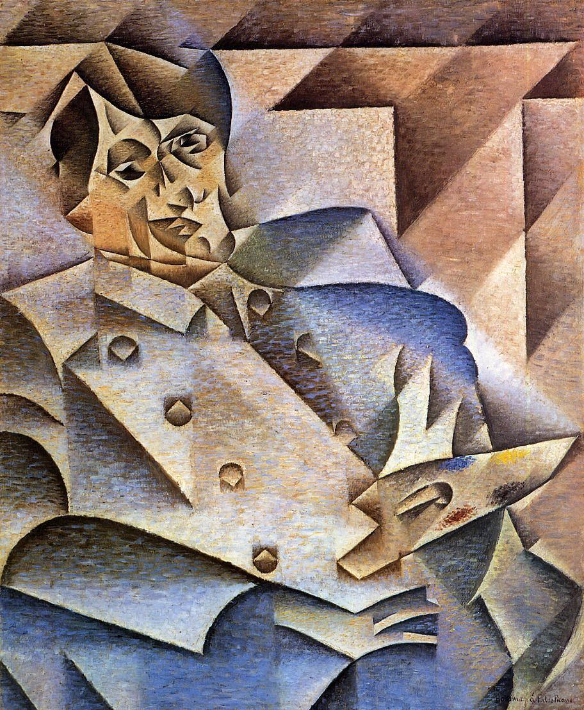
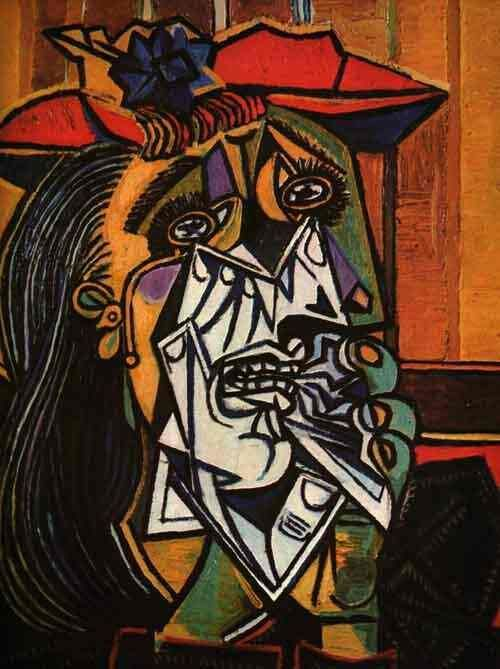

CUBISMO
Historicamente o Cubismo nasceu na obra de Cézanne. Para ele, a pintura não podia desvincular-se da natureza, tampouco copiava a natureza; as pintava como fossem cones,esferas e cilindros, de fato, a transformava. Ele dizia: “Mudo a água em vinho, o mundo em pintura”. Entretanto, os cubistas foram mais longe do que Cézanne. Passaram a representar os objetos com todas as suas partes num mesmo plano. É como se eles estivessem abertos e apresentassem todos os seus lados no plano frontal em relação ao espectador. Na verdade, essa atitude de decompor os objetos não tinha nenhum compromisso de fidelidade com a aparência real das coisas. (IMBROSI, 2023)
PRINCIPAIS CARACTERÍSTICAS DO CUBISMO
- Preferência pelas linha cortadas, cruzadas;
- Geometrização das formas e volumes;
- O claro-escuro perde sua função;
- Cores austeras, do branco ao negro passando pelo cinza, por um ocre apagado ou um castanho suave;
- Representação do volume colorido sobre superfícies planas;
- Sensação de pintura escultórica;
- Renúncia à perspectiva, composição em duas dimensões. (IMBROSI,2023)
PRINCIPAIS ARTISTAS
-Pablo Picasso: sempre passeou por uma série de estilos, entre eles o cubismo. O rapaz tinha a criatividade no sangue: era filho de um professor de História da Arte e desde pequeno teve incentivo para pintar.
-Léger: Léger se encantou pelo cubismo em 1909, quando seguiu para Paris para trabalhar como desenhista e estudar em Belas Artes.
-Francis Picaiba: Menos conhecido do grande público, Francis Picabia foi não só pintor como também escritor, performer, cineasta, fotógrafo... o seu talento cruzou fronteiras e Francis experimentou diferentes linguagens ao longo da vida. (FUKS,2020)
PRINCIPAIS OBRAS:
Les demoiselles d’Avignon (1907), Pablo Picasso
.jpeg)
Retrato de Picasso (1912), Juan Gris

A Mulher que Chora (1937), Pablo Picasso
REFERÊNCIAS
IMBROISI, Margaret; MARTINS, Simone. “Cubismo”;História das Artes, 2023.Disponível em:Site. Acesso em 07 abr 2023.
Oshio, Raquel;“Expressionismo: o que é, características e principais artistas”. Disponivel em: Site. Acesso em 21 Mar 2023.
FUKS, Rebeca.“Os 7 principais artistas do Cubismo”;Ebiografia, 2020.Disponível em: Site. Acesso em 07 abr 2023.